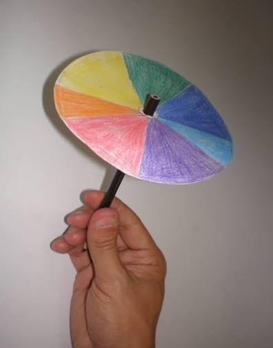

disco de newton

O disco de Newton e um dispositivo otico circular dividido em setores coloridos com as sete cores do espectro visivel (vermelho, laranja, amarelo, verde, azul, indigo e violeta). Quando girado em alta velocidade, o disco demonstra a composicao da luz branca por meio da persistencia retiniana. O Principio CientificoComposicao da luz: Mostra que a luz branca do Sol e a soma de todas as cores do arco-iris.Persistencia da visao: Nossos olhos retem a imagem de cada cor por uma fracao de segundo; ao girar rapido, as cores se misturam na retina e geram a ilusao do branco.Origem historica: Inspirado nos estudos de Sir Isaac Newton com prismas de vidro.
meio da folha
isso e um paragrafo